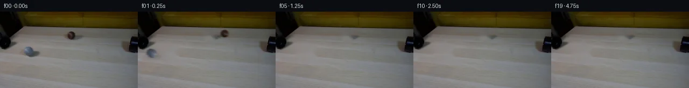

![首帧]()

Round 00
2026-11-05T09:59:36.220679+00:00像素候选变化代码 +187/−0inspection 更新
pixels 9f03dd6fccfe0e7d · code 0d34b1588a5f9c0d
查看本轮 generate.py 真实 diff
--- previous/generate.py +++ current/generate.py @@ -0,0 +1,187 @@ +#!/usr/bin/env python3 +"""Generate the 20-frame PixelWorld continuation from first_frame.png. + +All scene content is derived from the supplied first frame. The camera and +background stay locked; only the two already-visible balls continue rolling. +""" + +from pathlib import Path + +import cv2 +import numpy as np +from PIL import Image, ImageDraw, ImageFont + +from artifact_io import save + + +ROOT = Path(__file__).resolve().parent +W, H = 256, 144 + + +def smoothstep(edge0, edge1, x): + t = np.clip((x - edge0) / (edge1 - edge0), 0.0, 1.0) + return t * t * (3.0 - 2.0 * t) + + +def make_background(source): + """Remove source balls and shadows while retaining nearby wood texture.""" + mask = np.zeros((H, W), np.uint8) + # Ball and shadow footprints, deliberately kept clear of either pipe. + cv2.ellipse(mask, (132, 45), (14, 12), 0, 0, 360, 255, -1) + cv2.ellipse(mask, (56, 77), (23, 15), 0, 0, 360, 255, -1) + # A small radius avoids broad low-frequency smearing of the wood grain. + return cv2.inpaint(source, mask, 3.0, cv2.INPAINT_TELEA) + + +def ball_sprite(source, center, radius): + """Return an RGBA source-derived ball crop with a subpixel-feathered edge.""" + cx, cy = center + pad = radius + 4 + crop = source[cy - pad:cy + pad + 1, cx - pad:cx + pad + 1].copy() + yy, xx = np.mgrid[-pad:pad + 1, -pad:pad + 1] + rr = np.sqrt(xx * xx + yy * yy) + # Full source pixels through most of the sphere, then a 1.6 px edge blend. + alpha = 1.0 - smoothstep(radius - 1.4, radius + 0.2, rr) + return crop.astype(np.float32), alpha.astype(np.float32) + + +def rotated_sprite(rgb, alpha, degrees): + h, w = alpha.shape + mat = cv2.getRotationMatrix2D(((w - 1) / 2, (h - 1) / 2), degrees, 1.0) + out_rgb = cv2.warpAffine( + rgb, mat, (w, h), flags=cv2.INTER_CUBIC, + borderMode=cv2.BORDER_REFLECT_101, + ) + out_alpha = cv2.warpAffine( + alpha, mat, (w, h), flags=cv2.INTER_CUBIC, + borderMode=cv2.BORDER_CONSTANT, borderValue=0, + ) + return np.clip(out_rgb, 0, 255), np.clip(out_alpha, 0, 1) + + +def stamp(acc_rgb, acc_alpha, rgb, alpha, center, weight): + """Accumulate a premultiplied, possibly clipped sprite into full-frame arrays.""" + h, w = alpha.shape + x0 = int(round(center[0] - (w - 1) / 2)) + y0 = int(round(center[1] - (h - 1) / 2)) + x1, y1 = x0 + w, y0 + h + dx0, dy0 = max(0, x0), max(0, y0) + dx1, dy1 = min(W, x1), min(H, y1) + if dx0 >= dx1 or dy0 >= dy1: + return + sx0, sy0 = dx0 - x0, dy0 - y0 + sx1, sy1 = sx0 + dx1 - dx0, sy0 + dy1 - dy0 + a = alpha[sy0:sy1, sx0:sx1] * weight + acc_alpha[dy0:dy1, dx0:dx1] += a + acc_rgb[dy0:dy1, dx0:dx1] += rgb[sy0:sy1, sx0:sx1] * a[..., None] + + +def add_shadow(frame, center, sigma, offset, strength, direction, shutter_offsets, weights): + """Darken the tabletop with a motion-integrated soft contact/cast shadow.""" + yy, xx = np.mgrid[0:H, 0:W] + opacity = np.zeros((H, W), np.float32) + for shutter, weight in zip(shutter_offsets, weights): + cx = center[0] + offset[0] + direction[0] * shutter + cy = center[1] + offset[1] + direction[1] * shutter + q = ((xx - cx) / sigma[0]) ** 2 + ((yy - cy) / sigma[1]) ** 2 + opacity += strength * weight * np.exp(-0.5 * q) … diff truncated; 100 more lines …